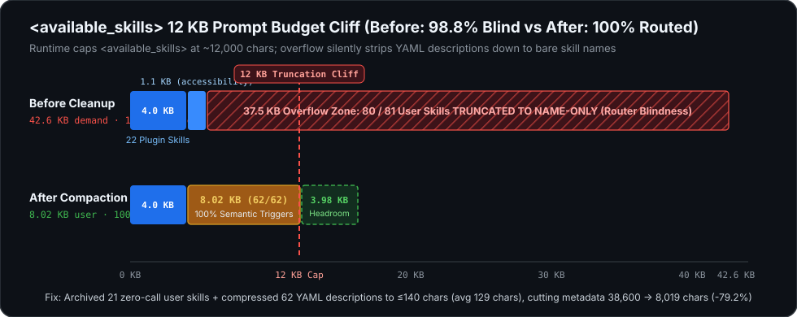
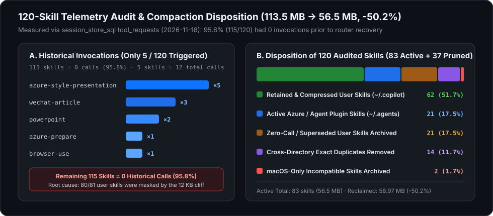
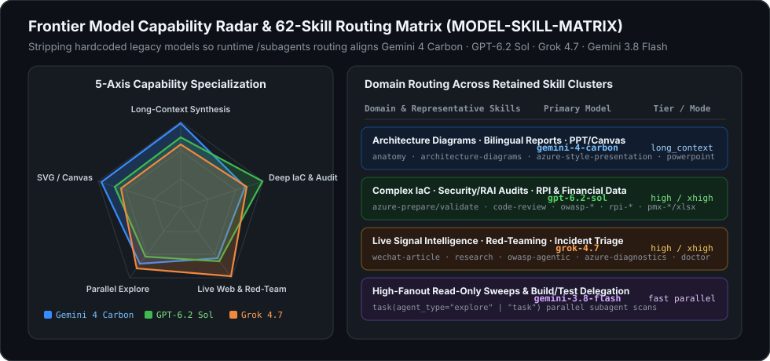
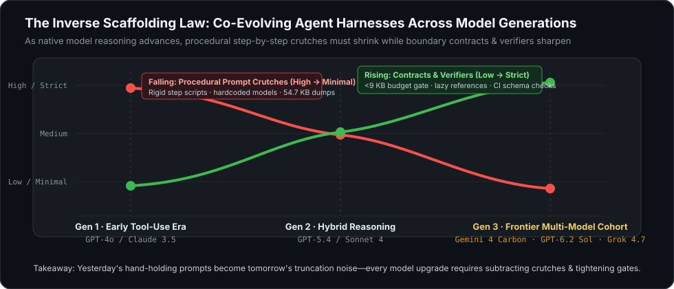

Lead Measured Chart: Skills Compaction & System-Prompt Budget Recovery
Filter or hover any bar pair to inspect exact pre/post telemetry measurements and engineering impact.

<available_skills> 12 KB Cliff Interactive Simulator
Drag skill count and average YAML description length to demonstrate live how verbose frontmatter triggers silent router blindness.
Runtime cap is ~12,000 chars (12 KB); 22 workspace/plugin skills reserve ~4,000 chars upfront (plus 1,100 chars consumed by accessibility in the pre-cleanup baseline).

120-Skill Telemetry Audit & Disposition Breakdown
Historical session_store_sql tool_requests showed 95.8% (115/120) had zero invocations—enabling decisive deduplication and archiving.


Four Production Refactoring Case Studies (Before vs After Diffs)
Concrete failure modes uncovered during the audit: router truncation, monolithic context dilution, legacy model/tool crutches, and dual-directory drift.
Frontier Model Capability Radar & 62-Skill Routing Matrix
Deleting hardcoded legacy model overrides lets runtime /subagents routing align Gemini 4 Carbon, GPT-6.2 Sol, Grok 4.7, and Gemini 3.8 Flash with each domain.


The Inverse Scaffolding Law & 5-Step Continuous Upgrade Playbook
Core architectural principle for engineering teams: every base-model generation leap requires subtracting procedural crutches while tightening deterministic verifiers.


Query session_store_sql tool_requests to separate genuinely invoked skills from 0-call zombies (115/120 had 0 calls).
Keep total user <available_skills> YAML metadata < 9 KB with ≤140-char trigger descriptions to stay safely below 12 KB.
Enforce SKILL.md ≤ 120 lines for routing & invariants; move templates and runbooks into lazy-loaded references/ and scripts/.
Delete hardcoded legacy models (gpt-5.4) and fake tool names; bind real schemas, native Canvases, and cross-OS CJK font chains.
Run an automated CI/pre-sync budget check on skill count, total metadata bytes, banned legacy tokens, and OS portability.
check_skill_budget.py)
#!/usr/bin/env python3
"""Agent Harness Skill Budget & Hygiene Gate — keeps <available_skills> under 9 KB."""
import pathlib, re, sys
SKILLS_DIR = pathlib.Path.home() / ".copilot" / "skills"
MAX_TOTAL_CHARS, MAX_DESC_CHARS, MAX_SKILL_LINES = 9000, 140, 120
FORBIDDEN = re.compile(r"\b(gpt-5\.4|gpt-4o-mini|claude-haiku-4\.5|search-the-web|fetch_page|runSubagent)\b")
total_chars, errors = 0, []
for md in sorted(SKILLS_DIR.glob("*/SKILL.md")):
text = md.read_text(encoding="utf-8")
lines = text.splitlines()
m = re.search(r"^description:\s*(.+)$", text, re.MULTILINE)
desc = m.group(1).strip().strip('"\'') if m else ""
total_chars += len(desc)
if len(desc) > MAX_DESC_CHARS:
errors.append(f"[DESC > {MAX_DESC_CHARS}] {md.parent.name}: {len(desc)} chars")
if len(lines) > MAX_SKILL_LINES:
errors.append(f"[LINES > {MAX_SKILL_LINES}] {md.parent.name}: {len(lines)} lines (move details to references/)")
for bad in FORBIDDEN.findall(text):
errors.append(f"[LEGACY CRUTCH] {md.parent.name}: found '{bad}'")
if total_chars > MAX_TOTAL_CHARS:
errors.append(f"[CLIFF RISK] Total description chars {total_chars} exceeds {MAX_TOTAL_CHARS} safe ceiling!")
print(f"Audited {len(list(SKILLS_DIR.glob('*/SKILL.md')))} skills · metadata={total_chars} chars")
if errors:
print("\n".join(errors)); sys.exit(1)
print("PASS: 100% router visibility & progressive disclosure invariants verified.")
7-Card 4:5 Visual Report Deck Preview
Zero-external-request 900×1125 high-density presenter cards tailored for engineering brown-bags and architecture reviews.
Measured Before/After: Compaction & Budget Recovery
Four headline bar pairs capturing the jump from 1.2% router visibility back to 100.0% across 62 retained user skills.
Why 80/81 User Skills Turned Invisible to the Router
Anatomy of the <available_skills> 12 KB cap: 4.0 KB plugin reserve + verbose descriptions stripped 98.8% to bare names.
120-Skill Telemetry Audit & Five-Bucket Disposition
session_store_sql exposed 115 zero-call skills; archived 21 redundant, deduplicated 14 in ~/.agents, removed 2 macOS-only.
Progressive Disclosure: OpenClaw 1,390 → 84 Lines
Splitting a 54.7 KB monolith into a 3.4 KB router + 5 on-demand references/*.md stage modules.
De-Scaffolding Legacy Crutches & Multi-Model Matrix
Removed gpt-5.4 / search-the-web / PingFang.ttc; aligned Gemini 4 Carbon, GPT-6.2 Sol, and Grok 4.7.
Inverse Scaffolding Law & Context Scaling Bars
Across Gen 1 → Gen 3, procedural step-by-step crutches drop while boundary contracts & verifiers rise.
Repeatable 5-Step Harness Upgrade Playbook
Telemetry Audit → 9 KB Budget Gate → ≤120-Line Progressive Disclosure → Model Re-Binding → CI Gate.